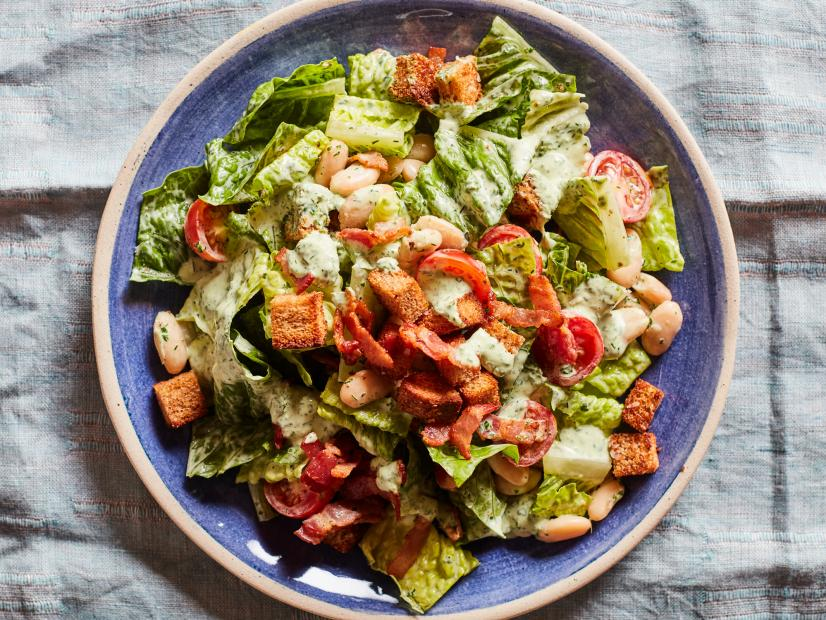

BLT Bean Salad

A delicious bean salad with all the flavors of a classic BLT sandwich
The homemade herb-mayo dressing adds freshness while the crisp bacon and croutons add a welcomed crunch.
It's a great way to use up those pantry beans in a summery salad you'll want to enjoy all year round.
Ingredients
- 2 slices whole-wheat sandwich bread, cut into 1/2-inch pieces
- 2 tablespoons olive oil
- Kosher salt and freshly ground black pepper
- 4 slices thick-cut bacon (about 4 ounces), sliced into 1/4-inch-thick pieces
- 1/2 cup fresh basil leaves
- 1/4 cup fresh parsley leaves
- 1/4 cup fresh dill
- 3 tablespoons mayonnaise
- 3 tablespoons plain yogurt
- 1 1/2 tablespoons fresh lemon juice
- One 15-ounce can Great Northern or cannellini beans, drained and rinsed
- 1 heart of romaine, cut into bite-size pieces
- 1 cup cherry tomatoes, halved
Steps
- Preheat the oven to 400 degrees F.
- Toss the bread, olive oil, a pinch of salt and several grinds of pepper on a rimmed baking sheet until combined, then spread into an even layer.
Bake until the croutons are golden brown and well toasted, tossing halfway through, 10 to 12 minutes.
- Meanwhile, add the bacon to a medium skillet and cook over medium heat, stirring occasionally, until crisp and well browned, about 5 minutes.
Transfer to a paper towel-lined plate with a slotted spoon to drain.
- For the dressing, puree the basil, parsley, dill, mayonnaise, yogurt, lemon juice, 2 teaspoons water, 1/4 teaspoon salt and several grinds of pepper in a food processor until the herbs are finely chopped and dressing is bright green.
Taste and adjust the seasoning with more salt and pepper.
- To assemble, add the beans, romaine, tomatoes, half the croutons and half the bacon to a large bowl.
Add half of the herb-mayo dressing, then toss to combine.
Transfer to a large serving bowl or platter, top with the remaining croutons and bacon and drizzle with the remaining dressing.